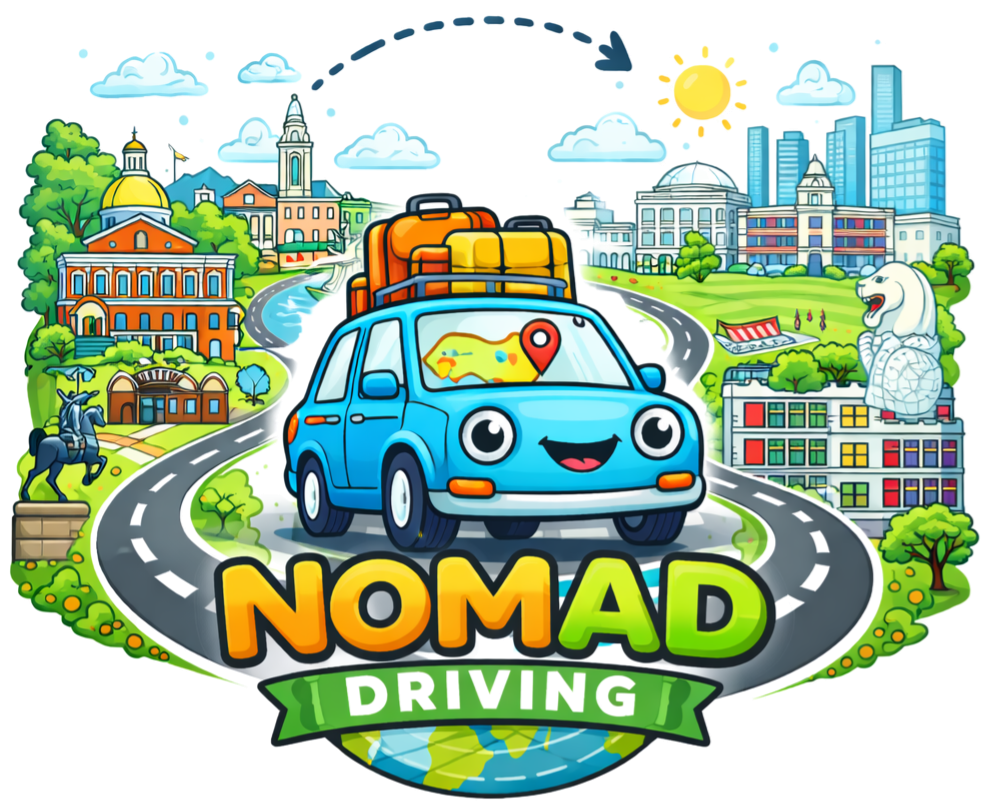
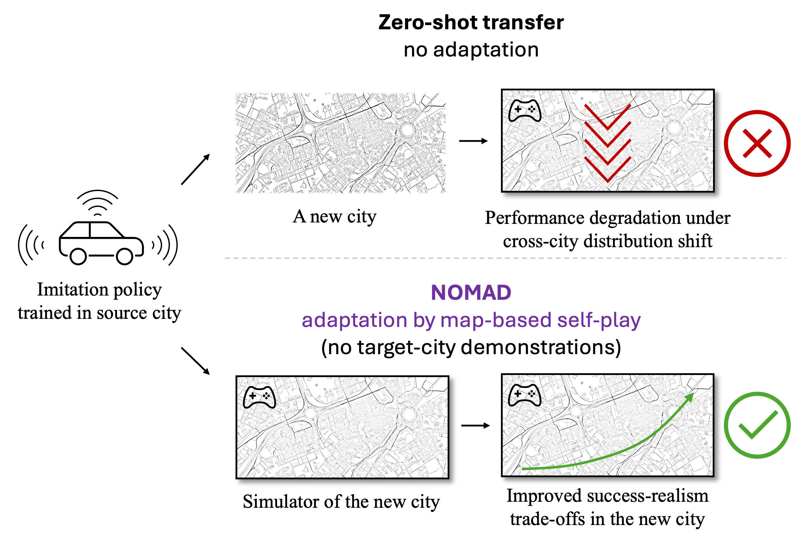
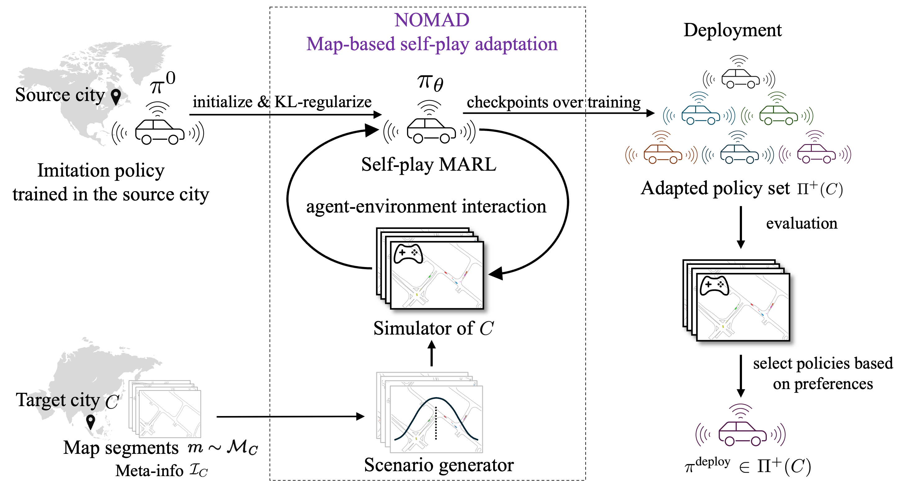
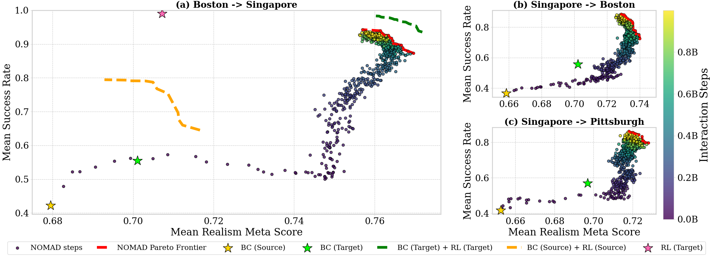
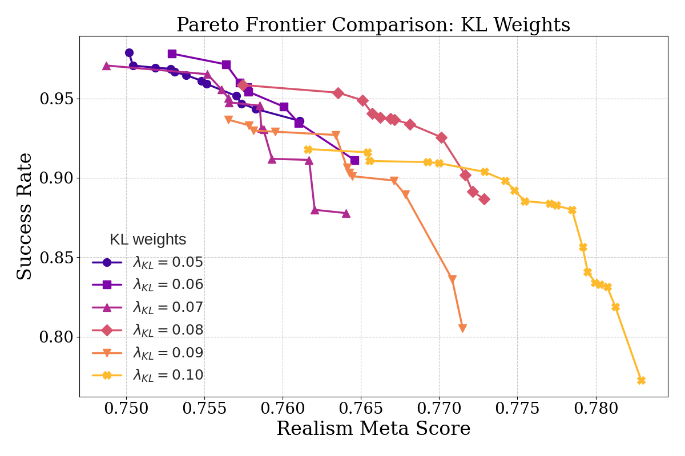

Our answer is YES!
We show that self-play multi-agent reinforcement learning can adapt a driving policy to a substantially different target city using only the map and meta-information, without requiring any human demonstrations from that city.

While autonomous vehicles have achieved reliable performance within specific operating regions, their deployment to new cities remains costly and slow. A key bottleneck is the need to collect many human demonstration trajectories when adapting driving policies to new cities that differ from those seen in training in terms of road geometry, traffic rules, and interaction patterns. In this paper, we show that self-play multi-agent reinforcement learning can adapt a driving policy to a substantially different target city using only the map and meta-information, without requiring any human demonstrations from that city. We introduce NO data Map-based self-play for Autonomous Driving (NOMAD), which enables policy adaptation in a simulator constructed based on the target-city map. Using a simple reward function, NOMAD substantially improves both task success rate and trajectory realism in target cities, demonstrating an effective and scalable alternative to data-intensive city-transfer methods.

put this at begining: we revisit a core assumption (conclusion part) make sure this paper rock. Figure 1: City transfer in autonomous driving. Top: Zero-shot deployment of an imitation policy trained in a source city into a new city leads to performance degradation due to cross-city distribution shift. Bottom: NOMAD adapts the same policy to the target city using only the target-city map and easily accessible meta-information, without any human demonstrations, by performing map-based self-play multi-agent reinforcement learning in a simulator of the new city. This adaptation substantially improves the policy's success rate and realism in the new city.

Figure 2: NOMAD Overview. Starting from a source-city imitation policy \(\pi^0\), NOMAD adapts it to a target city \(C\) using map segments \(m\sim \mathcal{M}_C\) and meta-information \(\mathcal{I}_C\). A scenario generator samples initial states and goals that are loaded in a data-driven multi-agent simulator, yielding a simulator of \(C\). The policy \(\pi_\theta\) is initialized from \(\pi^0\) and optimized via KL-regularized self-play MARL. Training checkpoints produce an adapted policy set \(\Pi^+(C)\), from which a deployment policy \(\pi^{\text{deploy}}\) is chosen based on practitioner preferences.
To demonstrate that NOMAD's effectiveness stems from the adaptation framework itself rather than reward tuning, we deliberately adopt a minimal reward formulation:
\[r^i(s_t,a_t,s_{t+1})=1.0\times\mathbb{1}_{\mathcal{G}^i(s_{t+1})} - 0.75\times\mathbb{1}_{\mathcal{C}^i(s_{t+1})} - 0.75\times\mathbb{1}_{\mathcal{O}^i(s_{t+1})}\]
where \(\mathbb{1}(\cdot)\) is the indicator function. \(\mathcal{G}^i(s_t)\), \(\mathcal{C}^i(s_t)\), and \(\mathcal{O}^i(s_t)\) represent if the goal is reached, a collision occurs, and the car drives offroad for agent \(i\) at timestep \(t\), respectively..
Given our minimal reward formulation, optimization without regularization could yield policies that complete goals but deviate from human-like driving patterns. To retain useful knowledge from the source city and mitigate reward hacking, we regularize the learned policy toward the prior \(\pi^0\) using reverse Kullback--Leibler divergence. This choice penalizes assigning probability mass to actions deemed unlikely by the prior, thereby discouraging unnatural driving while allowing selective adaptation when required by the target city. The regularized objective is:
\[\max_{\theta}\; J(\theta) = J_{\text{PPO}}(\theta) - \lambda_\mathrm{KL}\cdot \mathbb{E}_{\pi_\theta}\!\left[\frac{1}{H}\sum_{t=0}^{H-1} D_{\mathrm{KL}}\!\left(\pi_\theta(\cdot|o_t)\,\|\,\pi^0(\cdot|o_t)\right)\right]\]
where \(J_{\text{PPO}}(\theta)\) is the proximal policy optimization objective, \(\lambda_\mathrm{KL}\) is the KL regularization weight, \(H\) is the episode horizon, and \(D_{\mathrm{KL}}\) is the Kullback-Leibler divergence between the learned policy \(\pi_\theta\) and the source policy \(\pi^0\).
For realism, we adopt the Waymo Open Sim Agents Challenge (WOSAC) evaluation metric. WOSAC aggregates weighted components over kinematics (e.g., speed and acceleration), interaction features (e.g., time-to-collision and collisions), and map compliance (e.g., road departures).

Figure 3: Success--realism trade-offs under city transfer. We plot mean success rate versus mean realism meta score over 5 runs for three transfer settings: (a) Boston-to-Singapore (primary), (b) Singapore-to-Boston, and (c) Singapore-to-Pittsburgh. Each dot is a NOMAD training checkpoint, colored by the cumulative number of interaction steps; the red dashed curve denotes the empirical Pareto frontier over NOMAD checkpoints. Stars and dashed curves denote reference policies and ablations: the zero-shot transfer behavior cloning policy from the source city \(\pi^0\) (BC (Source)), behavior cloning with target-city demonstrations (BC (Target)), BC pretrained, self-play with logged target-city scenarios (BC (Target) + RL (Target)), BC pretrained, self-play with logged source-city scenarios (BC (Source) + RL (Source)), and RL from scratch in the target city with generated scenarios (RL (Target)).
| Policy | Realism Meta Score | Success Rate |
|---|---|---|
| \(\pi_d^{\text{expert}}\) | 0.8056 | 88.26% |
| Random | 0.4074 | 4.30% |
| Constant Velocity | 0.6147 | 19.45% |
| \(\pi^0\) | 0.6795 | 42.25% |
| BC (Singapore) | 0.7011 | 55.49% |
| NOMAD Frontier | 0.7570~0.7697 | 87.28%~94.27% |

Figure 4: Pareto frontiers of success rate versus realism meta score for different KL weights. Smaller KL weights favor higher success at the cost of realism, while larger KL weights encourage more realistic behaviors but constrain success rate. The results reveal that the values of \(\lambda_{\text{KL}}\) at around \(0.08\) achieve the best balance. We use the \(\lambda_{\text{KL}}=0.08\) for all city pairs.
Below we show qualitative comparisons between zero-shot transferred policies and policies adapted by NOMAD across different scenarios:
The zero-shot policy, trained in Boston, fails to account for the narrower lane geometry commonly found in Singapore and gradually drifts outside the drivable region, resulting in off-road behavior (yellow). In contrast, NOMAD adapts to the target-city road geometry through map-based self-play and maintains stable lane-centering throughout the maneuver. Blue denotes the controlled vehicle, the circle indicates the goal location, white boxes represent static vehicles, and yellow highlights collision with road boundaries.
The zero-shot policy exhibits a systematic bias toward right-hand driving learned in the source city, leading to lane violation and collision in the left-hand traffic setting of Singapore. In contrast, NOMAD adapts its lane-keeping behavior through map-based self-play and consistently drives on the correct side of the road. Blue denotes the controlled vehicle, the circle indicates the goal location, white boxes represent static vehicles, and red and yellow highlights collision with vehicles and road boundaries, respectively.
The zero-shot policy retains a left-hand driving bias learned in the source city: vehicle 61 and vehicle 11 both tend to keep left, resulting in lane violations, collision, and off-road behavior in the right-hand traffic setting of Boston. In contrast, NOMAD adapts its lane-keeping behavior via map-based self-play and consistently drives on the correct side of the road. Blue denotes the controlled vehicle, the circle indicates the goal location, white boxes represent static vehicles, and red and yellow highlights collision with vehicles and road boundaries, respectively.
The zero-shot policy fails to execute an early rightward avoidance maneuver and collides with the first static vehicle. Following the collision, it initiates a right-turn corrective action, whereas a leftward maneuver is required to avoid the second obstacle, leading to a cascading collision. In contrast, NOMAD selects appropriate avoidance actions at both decision points, illustrating improved closed-loop decision making under target-city geometric and obstacle-layout shifts. Blue denotes the controlled vehicle, the circle indicates the goal location, white boxes represent static vehicles, and red highlights collision with vehicles.
The zero-shot policy exhibits miscalibrated interaction behavior: vehicle 18 approaches significantly faster than vehicle 19, leading to a collision, while vehicle 27 fails to yield appropriately to vehicle 31 at the intersection. In contrast, NOMAD learns more balanced speed regulation and yielding behavior through map-based self-play, enabling safe and coordinated multi-vehicle interaction in the target city. Blue denotes the controlled vehicle, the circle indicates the goal location, white boxes represent static vehicles, and red and yellow highlights collision with vehicles and road boundaries, respectively.
1. Driving Culture: Differences in driving culture and social conventions across cities and countries remain a fundamental challenge for policy transfer, underscoring the need for richer representations of interaction norms that go beyond geometric map structure alone.
2. Reward Function Design: While KL regularization can partially mitigate the loss of kinematic realism, explicit kinematics-aware reward design may still be necessary to fully capture realistic driving behavior.
@inproceedings{wang2026learning,
title = {Learning to Drive in New Cities Without Human Demonstrations},
author = {Wang, Zilin and Rahmani, Saeed and Cornelisse, Daphne and Sarkar, Bidipta and Goldie, Alexander David and Foerster, Jakob Nicolaus and Whiteson, Shimon},
journal = {arXiv preprint arXiv: xxxx.xxxxx},
year = {2026},
}